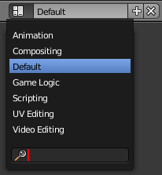

屏幕布局¶

屏幕布局下拉菜单
屏幕布局 是指预定义窗口布局。Blender的区块很灵活，用户可以针对不同的任务，如建模、动画、和脚本，自定义工作环境。常用在同一文件中不同工作环境的快速切换。关于如何移动边框、分割与合并区块见 区块控件 。
屏幕布局下拉菜单位于 信息编辑器 的标题栏，用户可以用来选择布局。
控件¶
- 屏幕布局
- 可用屏幕布局列表。见 默认屏幕布局 。
- 添加
+ - 单击 添加 按钮，会基于当前布局新建一个新的布局。
- 删除
X - 用户可以使用 删除 按钮删除选中的屏幕布局。
Hint
默认每个屏幕布局都会 记忆 最后使用的 场景 。选中屏幕布局将切换布局，并跳转到该场景。
默认屏幕布局¶
| 3D View Full: | 全屏的3D视图，用于预览场景 |
|---|---|
| Animation: | 制作角色以及移动物体、改变形状和颜色等等。 |
| Compositing: | 合成场景的不同部分(如背景, 角色, 特效)以及滤镜 (如颜色校正) 。 |
| Default: | Blender新文件的默认布局.。用于新建模型。 |
| Game Logic: | Blender游戏的规划和编程。 |
| Motion Tracking: | |
| 用于与视频编辑器一起做运动追踪。 | |
| Scripting: | 记录工作内容和/或写自定义脚本自动化Blender。 |
| UV Editing: | 将网格物体展开为2D，以控制表面贴图映射。 |
| Video Editing: | 剪切和编辑动画序列。 |